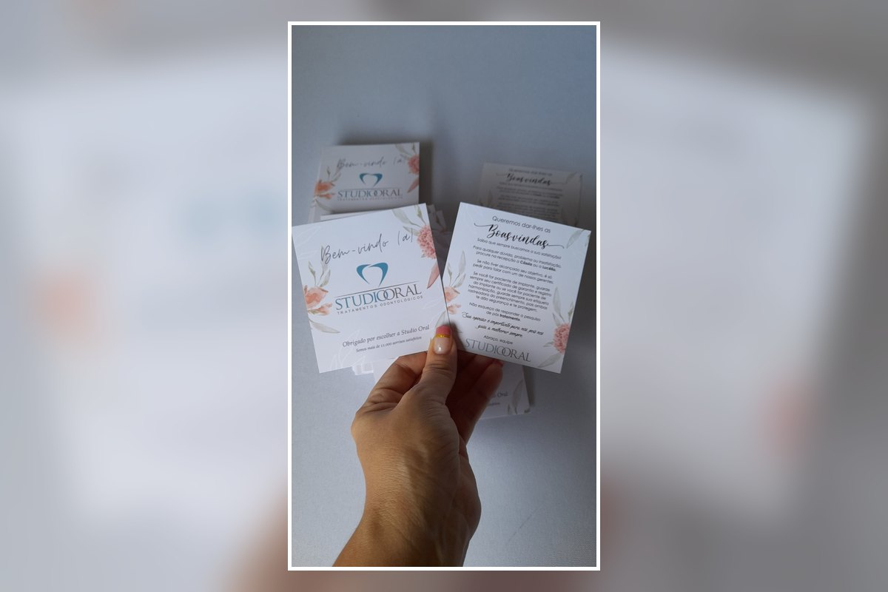

Identidade visual limpa
Composição equilibrada para valorizar logo, mensagem e informações essenciais.
Uma opção para marcas que preferem comunicação visual limpa, elegante e objetiva. O cartão pode acompanhar produtos e embalagens, apresentar informações importantes e reforçar a identidade da sua marca.

No design minimalista, tipografia, espaçamento, cores e informações são organizados para criar uma apresentação leve e profissional.
Composição equilibrada para valorizar logo, mensagem e informações essenciais.
Pode acompanhar embalagens, encomendas, presentes, moda, acessórios e outros segmentos.
Formato, papel, cores, frente e verso e acabamentos são definidos conforme o projeto.
Envie sua arte, referência ou ideia pelo WhatsApp. Confirmamos formato, quantidade, papel, acabamento, prazo e valor antes da produção.
Envie sua referência e solicite um orçamento personalizado.